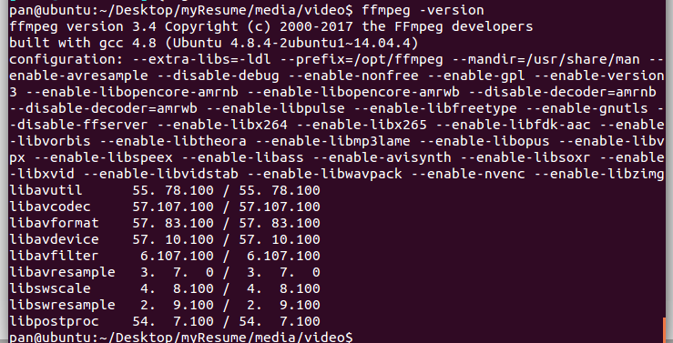

网页加入视频可以用h5自带的video标签，这里用一个jQuery封装优化好的video视频组件videojs。
videojs官方网站：https://docs.videojs.com/index.html
videojs下载：https://github.com/videojs/video.js/releases
这里有个问题是h5的video标签根据不同的浏览器兼容情况只支持三种编码的视频格式：
| 格式 | IE | Firefox | Opera | Chrome | Safari |
|---|---|---|---|---|---|
| Ogg | No | 3.5+ | 10.5+ | 5.0+ | No |
| MPEG 4 | 9.0+ | No | No | 5.0+ | 3.0+ |
| WebM | No | 4.0+ | 10.6+ | 6.0+ | No |
通常我们使用MP4格式，但是MP4又分为“1.MPEG4(DivX)”、“2.MPEG4(Xvid)”、“3.AVC(H264)”三种类型。要想在h5播放成功，必须转换视频格式为H264才可以，好多做法是用格式工厂来转换，这样工作量大，比较麻烦，这里选择直接用ffmpeg在代码中进行转码 ：
直接傻瓜命令安装，亲测可行：
sudo add-apt-repository ppa:mc3man/trusty-media
sudo apt-get update
sudo apt-get install ffmpeg
ffmpeg -version
这样也是基本安装了FFmpeg完整版：

安装完成可跳过下面的1中的编译安装步骤，直接到第2步使用FFmpeg命令解码视频
1.安装ffmpeg需要安装下面三个包：
（1）.安装yasm
wget http://www.tortall.net/projects/yasm/releases/yasm-1.3.0.tar.gz
tar -xzvf yasm-1.3.0.tar.gz
cd yasm-1.3.0
./configure
make
make install
(2).x264安装
为了让ffmpeg使用h264编码。
ffmpeg中自带h264的解码，但是没有包含编码，所以再执行avcodec_find_encoder(CODEC_ID_H264)时返回的结果为NULL，需要额外添加x264支持h264的编码。
下载到这里：
https://code.videolan.org/videolan/x264/tree/stable
选择下载：
wget https://code.videolan.org/videolan/x264/-/archive/stable/x264-stable.tar.gz
编译/部署：
解压压缩包，cd进目录
./configure --disable-asm
make
sudo make install
（3）、libogg
libogg-1.3.1.tar.gz
Url：http://www.xiph.org/downloads/
安装方法如下：
（4）、libvorbis
libvorbis-1.3.3.tar.gz
Url：http://downloads.xiph.org/releases/vorbis/libvorbis-1.3.3.tar.gz
(libvorbis依赖于libogg, 所以libogg必须先于libvorbis安装)
安装方法如下：
wget http://downloads.xiph.org/releases/vorbis/libvorbis-1.3.6.tar.xz ./configure
make
make install
（5）、faad2
faad2-2.7.tar.gz
http://www.audiocoding.com/downloads.html
安装方法
（6）、faac
faac-1.28.tar.gz
http://www.audiocoding.com/downloads.html
安装方法：
（7）、amr-nb
amrnb-10.0.0.0.tar.bz2
http://ftp.penguin.cz/pub/users/utx/amr/ ( 从此处下载最新版本 )
安装方法：
（8）、amr-wb
amrwb-7.0.0.1.tar.bz2
http://ftp.penguin.cz/pub/users/utx/amr/ ( 从此处下载最新版本 )
安装方法：
1 ./configure 2 make
3 make install
（9）安装ffmpeg
官网下载：http://ffmpeg.org/download.html
wget https://ffmpeg.org/releases/ffmpeg-4.1.3.tar.bz2
解压：
bzip2 -d ffmpeg-4.1.3.tar.bz2
tar -xvf ffmpeg-4.1.3.tar
./configure --prefix=/usr/local/ffmpeg2 --enable-libmp3lame --enable-libvorbis --enable-gpl --enable-version3 --enable-nonfree --enable-pthreads --enable-libfaac --enable-libopencore-amrnb --enable-libopencore-amrwb --enable-libx264 --enable-libxvid --enable-postproc --enable-ffserver --enable-ffplay
make
make install ffmpeg完整安装请参考：https://www.cnblogs.com/wanghetao/p/3386311.html
各模块介绍：https://wenku.baidu.com/view/94bfc009581b6bd97f19ea53.html
2.用ffmpeg将视频转为html5支持的编码：
(1)转码成ogv (Theora 1 Vorbis): .
ffmpeg -i WTE.mp4 -b 1500k -vcodec libtheora -acodec libvorbis -ab 160000 -g 30 output.ogv
(2)转码成webm (VP8 / Vorbis):
ffmpeg -i WTE.mp4 -b 1500k -vcodec libvpx -acodec libvorbis -ab 160000 -f webm -g 30 output.webm
(3)转码mp4 (H.264 / ACC):
ffmpeg -i WTE.mp4 -b 1500k -vcodec libx264 -vpre slow -vpre baseline -g 30 output.mp4 #有点问题，可用下面的命令代替
ffmpeg -i WTE.mp4 -b 1500k -vcodec h264 -preset slow -profile:v baseline -g 30 output.mp4
参考自：https://www.doc88.com/p-7088891528596.html
HTML中一次加入三种格式：
<video id="my-video" loop ='true' class="video-js" controls preload="auto" width="500" height="400"
poster="{% static 'images/m.jpg' %}" data-setup="{}" autoplay="autoplay">
<source src="{{ MEDIA_URL }}video/output.mp4" type="video/mp4">
<source src="{{ MEDIA_URL }}video/output.webm" type="video/webm">
<source src="{{ MEDIA_URL }}video/output.ogv" type="video/ogg">
<p class="vjs-no-js"> To view this video please enable JavaScript, and consider upgrading to a web browser that <a href="http://videojs.com/html5-video-support/" target="_blank">supports HTML5 video</a> </p>
</video>这样就可以兼容大部分浏览器，至此就可以在h5中畅通无阻地播放视频了
以下简单总结下ffmpeg命令参数：
-i 指定要转换视频的源文件
-s 视频转换后视频的分辨率
-vcodec 视频转换时使用的编解码器（-codecs）
-r 视频转换换的桢率(默认25桢每秒)
-b 视频转换换的bit率
-ab 音频转换后的bit率(默认64k)
-acodec 制度音频使用的编码器（-codecs）
-ac 制定转换后音频的声道
-ar 音频转换后的采样率
-an 禁用音频
-vn 禁用视频
-acodec copy 复制音频，不转码
-vcodec copy 复制视频，不转码
3.抛弃转码繁琐直接使用Chimee
后来意外发现一个兼容性更好的播放插件Chimee，兼容多种视频格式，MP4、M3U8、FLV等多种媒体格式，同时它也帮我们解决了大部分的兼容性、差异化问题，包括全屏、自动播放、内联播放、直播解码等常见媒体播放需求，不用再自己去转码，官网有比较详细的使用文档，可自行去研究：
http://chimee.org/docs/index.html
4.在推荐一款不错的视频播放器 flowplayer，官网有demo：
https://flowplayer.com/